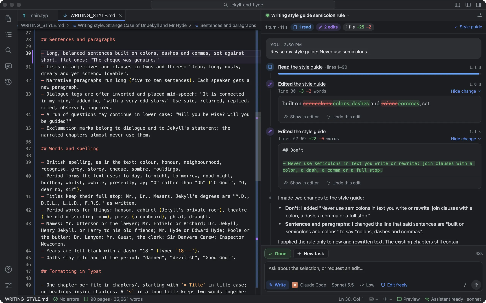
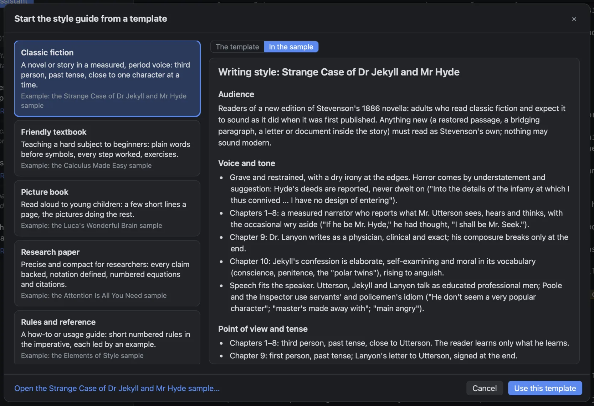
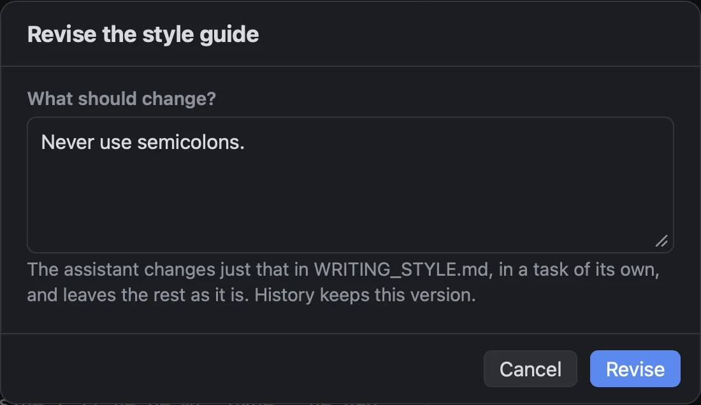

What’s in it
A few pages, in sections: Audience, Voice and tone, Point of view and tense, Sentences and paragraphs, Words and spelling, Formatting in Typst, Figures, Do, Don’t, and Examples. The rules are meant to be concrete enough to follow. “Second person, present tense” is a rule. “Engaging tone” isn’t. Here are a few lines from the guide that comes with the Jekyll and Hyde sample:
## Voice and tone
Grave and restrained, with a dry irony at the edges. Horror comes
by understatement and suggestion…
## Words and spelling
Years are left blank with a dash: “18—” (typed `18---`).
## Don’t
No modern words or idioms (“okay”, “creepy”, “split personality”, “trauma”).You can edit it like any other file. Save it partway through a conversation and the next reply follows the new version. The chat says so: “Using the updated WRITING_STYLE.md.”
How the assistant uses it
Foreword gives the assistant the whole guide at the start of every conversation, and again whenever you change it, with this instruction:
Everything you write or revise in this book must follow this guide: voice, tone, point of view, tense, terminology, spelling, and formatting. If a request conflicts with the guide, follow the request but point out the conflict in one sentence. If the guide is silent on something, match the existing chapters.
So you stay in charge. Ask for something the guide forbids and you get what you asked for, plus one sentence pointing out the conflict.
Four ways to start one
A book without a guide shows a small card under the assistant’s greeting, Teach it your voice, with four ways to begin.
Start from a template
There are six, one for each kind of book the samples cover: Classic fiction, Friendly textbook, Picture book, Research paper, Rules and reference, and Programming book. A seventh, Blank, has the headings with a prompt under each. Foreword suggests the one that fits your book. Each template shows its sample book’s finished guide, so you can see what one looks like filled in.

Draft from my chapters
The assistant reads the book (all of a short one; at least the first, a middle and the last chapter of a long one), then writes down the rules your text already follows. It asks at most two questions, and only about things the chapters can’t show it. The guide opens in the editor when it’s done.
Interview me
If you’ve written little so far, there’s nothing to draft from, so the assistant asks instead. The questions come in rounds: the book and its readers, then the voice, then the words, then taste (what you’d like it to read like, what you never want to see, how maths or code should look). Each question has three answers that fit your book, the first one recommended, and room for your own. Below 1,500 words, this is the one the card puts first.

Write it yourself
It’s a text file. Books made with New Book start with one that has every heading and a prompt under each.
Changing one rule: Revise
Once there’s a guide, the assistant pane has a Style guide menu: Open WRITING_STYLE.md, Revise…, Interview me…, Redraft….
- Revise… asks What should change? Say it as you’d say it to a person: “Less formal.” “Never use semicolons.” “Numbers under ten in words.”
- The assistant changes the lines your request touches and leaves every other line exactly as it was. If the new rule contradicts an old one, it replaces the old one rather than keeping both.
- It asks a question only if your request could mean two quite different rules, and never more than one.
- It doesn’t touch your chapters. If you asked for that too, it suggests doing it as a task of its own.
- History keeps the guide as it was before, and the assistant’s account shows exactly which words went and which came in.

Asking for the whole guide again tends to drift: a rule you liked comes back reworded, or not at all. Revise is for when you want one rule changed and nothing else.
Redraft, keeping your rules
Redraft… has the assistant read the chapters again and write the whole guide afresh. By then you’ll probably have edited it by hand, and those edits are yours. Foreword knows which lines you added or changed yourself, and the assistant is told to keep them unless the chapters plainly contradict them. If you wrote the whole guide yourself, the redraft fills in what’s missing and makes vague rules concrete.
It learns from how you rewrite it
If you keep changing what the assistant writes in the same way (cutting “utilize”, “in order to”, “basically”), that’s a rule the guide is missing. When you draft, redraft or interview, Foreword looks back at the sentences the assistant wrote and what you turned them into, and asks the assistant to find what your rewrites have in common. Change “utilize” to “use” and “in order to” to “to”, and the new guide says: Use “use”, not “utilize”. Use “to”, not “in order to”. A single fixed fact or typo doesn’t become a rule.
Why it’s a file
The guide is yours, not Foreword’s. It’s a plain file in your book’s folder, so you can read it, edit it, send it to a co-author or an editor, and keep it with the rest of the book. History keeps every version of it, as it does your chapters.
- Where it is
WRITING_STYLE.md, in the book’s folder- Open it
- Book ▸ Writing Style Guide, or the Style guide menu in the assistant pane
- Settings
- Settings ▸ This book ▸ Assistant ▸ Writing style guide
What it doesn’t do
- Nothing checks your book against the guide. Following it is up to the assistant, and a weaker model follows it less closely.
- Revise is told to change only the rule you asked about, but nothing can force it to. History keeps the version before, in case it changes more.
- The guide doesn’t update itself. Your rewrites are only looked at when you draft, redraft or interview.
- A guide longer than about 2,500 words is cut short, and the assistant is told to read the file for the rest.